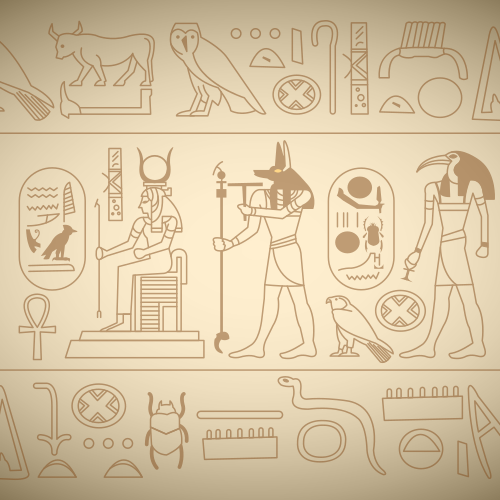

Throughout history, Men have sought to explain and represent the origin of the world, the moment when Creation takes place and gives birth to Men, to animals, to plants, to any living thing, to water, to land, etc., the ancient Egyptians are no exception.
A cosmogony is a set of mythical stories describing the creation of the world
(from the Greek cosmo- "world" and gon- "to generate"). In Egypt, there is no such thing as a
but several cosmogonies, the main ones being those of Heliopolis, Memphis, and Hermopolis.
Each of them
have their own story of creation and feature a main god,
or demiurge, god of the city concerned. The demiurge is the Creator (of the world), the divinity
responsible for creating the universe. Demiurge comes from the Greek demiourgos, meaning craftsman,
manufacturer. In Egypt, every Egyptian cosmogony (meaning "to generate the world") has its
own demiurge.
The most widespread cosmogony is that of Heliopolis, whose creator is a solar demiurge
(Re in one of its forms) and gives a divine genealogy descending to the pharaonic god Horus.